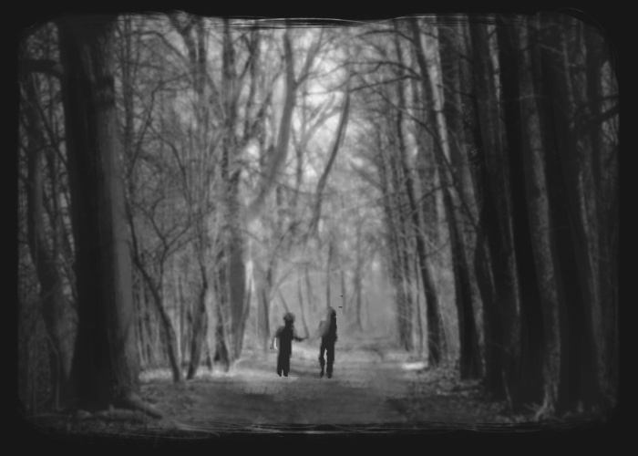

They then made their way to the forest, being careful not to alert their parents of their presence

When it was midday Gretel shared her bread with Hansel, who had scattered his piece along the path. Then they fell asleep, and evening passed, but no one came to get the poor children.
It was dark at night when they decided to make a fie and cook the meat they had taken.